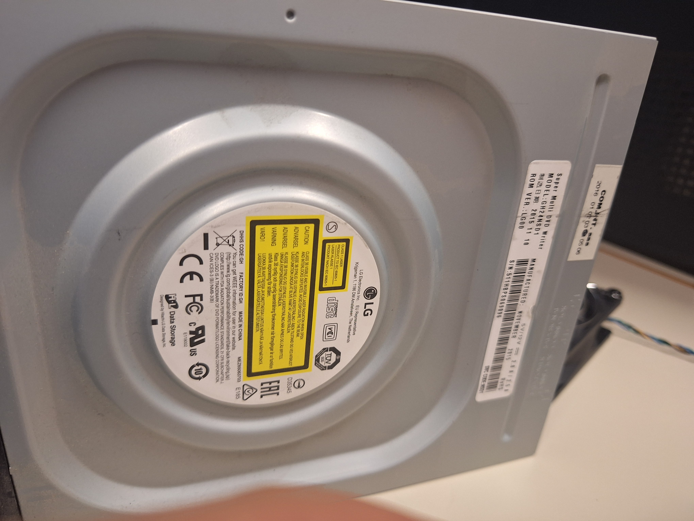
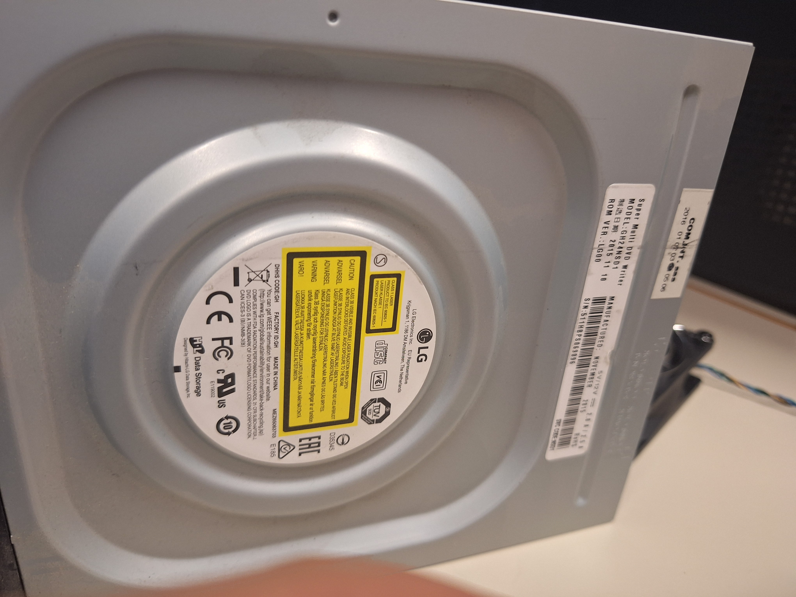

Ecco i vari step:
Preparazione e briefing
Prima di iniziare, i docenti ci hanno introdotto al progetto, dedicando una lezione all'illustrazione delle funzioni dei principali componenti di un computer.
Smontaggio del computer
Dopo aver preso i materiali necessari, con attenzione, abbiamo iniziato a smontare il PC, rimuovendo il pannello laterale e identificando ogni componente interno. Seguendo le istruzioni dei docenti, abbiamo estratto la scheda madre, il processore, la RAM, l’alimentatore e le altre parti, osservando da vicino la loro disposizione e connessione.
Analisi dei componenti
Dopo aver separato i vari elementi, ci siamo soffermati sull’analisi di ciascun pezzo. Abbiamo discusso il ruolo e il funzionamento di ogni componente, comprendendo l’importanza di ciascun elemento nel sistema informatico.

 



Rimontaggio del computer
Dopo aver esaminato i pezzi, abbiamo proceduto a rimontare il PC, riattaccando ogni parte con precisione. È stata una sfida interessante, che ci ha insegnato l’importanza della pazienza e della cura nei dettagli per garantire il corretto funzionamento del dispositivo.
Conclusioni
Una volta rimontato il computer, abbiamo testato il suo funzionamento e verificato che ogni componente fosse correttamente installato. Confrontando le nostre osservazioni, abbiamo riflettuto su ciò che abbiamo imparato e apprezzato la possibilità di esplorare l’hardware in modo pratico e concreto.